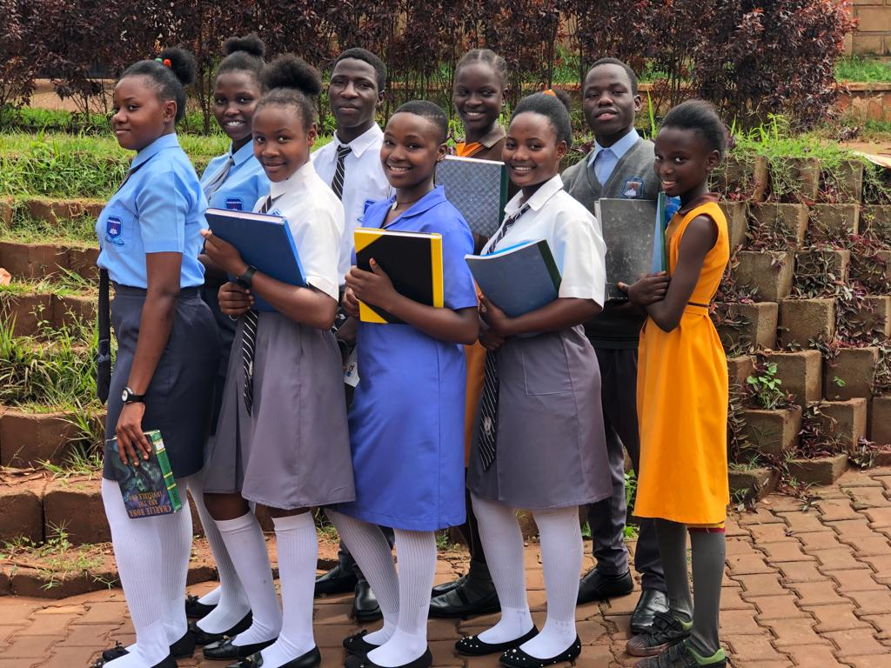
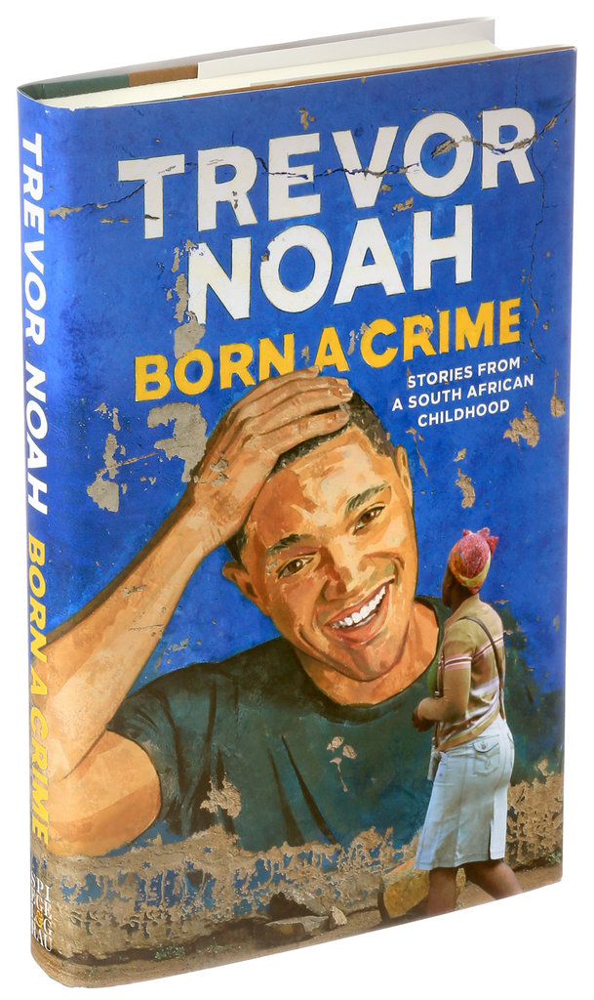
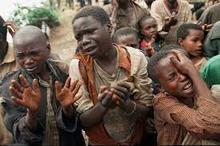
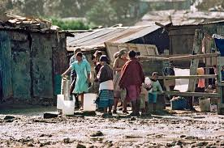

About me
Hi! My name is Judith Nandase I was born in Iganga; I have grown up in a family of only girls,
we are four girls and I am the second in line. My Dad passed away when I was still a young girl.
If I can remember the date was October 3rd 2007 for ever I say “Rest in Power Dad”. This automatically
meant that my Mum was going to carry the whole world for us and kudos to her because she has been our
strongest pillar. Growing up as an orphan is so challenging but also an experience worthy of telling.
There is a lot to learn in life and a lot to experience on your journey to what I may call destiny.
The young independent journey involves embarrassments, disrespect, conflicts, teasing, insecurity and
being frightened all time but trust me it's a style of life I may say that was designed for a person like me.
Did it mean an end of life? “NO” it also strengthened my resolve, helped me to soul search, find a perfect
positioning that I stand on today and that is TALENT, because of my talent I have been able to navigate life
at a tender age far away from my mother and siblings.
Talent
School

I am happy to be able to tell my story today and I hope it will inspire many young people especially
young girls who are greatly pressed between a rock and a hard place of life with only one option of giving up.
I tell them please DON’T GIVE UP life always presents us with miracles and second chances and here my new life
far away from my close family, I got in the hands of people very senior to men I embraced them as my new parents
and mentors these became my life seniors who kept at my back, they could tap onto my neck to always remind me
about the journey that I still have ahead of me. “Come on, it is not yet time to judge the world by what you
are thinking and seeing ,as long as you still exist there is no limit in life” the words I was always told by
Mr. Ssozi Brian the Team Leader at Rockies Organization, this is where I found myself as I joined my Secondary
School in 2014 and I have since been here till I finalized with the Six years of Secondary school. We called him
Papa the title he well embraced because he took us up and stepped in the father’s shoes for the more than 60 beneficiaries
at the organization and it is because of my Talent that I finally got to this new family and the words he kept telling
me are what keeps me going every now and then.
Rockies organization, a space that nurtures and develops talents of young people in performing and creative arts,
became my new family and picked me from an almost lost world and showed me my ability, my value and my strength in
life. No matter how helpless you may be at one point, the moment you spot your beginning in life, then the ending will
always be a beautiful story to tell. Like the old adage a bad beginning makes a good end. My talent is all I had with me
and it is what was needed to take me anywhere and earn me anything and here I am in Nairobi today a place I could never have
dreamt of and many still cannot have this dream. If I can make it, then surely however, believing in the beauty of their dreams
can also do it but what differs is how we all do it because we are all different. Fight for your survival and one other major thing
is don’t dare try to lose your hope, by trying to listen and focusing on other people’s negative judgments or even judge yourself, that you are a failure.
Dream big and work hard no matter your status. This all is part of your success, it helps you gather the content for your story in the future,
accept yourself as who you are for now and fight for your true definition. It all starts with you there is no need to know my past that is what ,
my new home taught me, we have travelled, developed my talent, defined my new self all through my new home, no matter our status at least we always ,
put smiles on each and everyone's face the moment they see us performing, and that brings out our slogan "MAKE THEM SMILE” This has always been my life,
I appreciate my life, but the journey still continues.

TRAVOR NOAH
Born a crime
Born a crime is Travor Noah
"Actually try reading this book too if at all you hav't given it a glance before"
Partricia's marriege with Abel
Trevor says he wondered why his mother got married to Abel.He describes Abel in a weired way.
He says Abel was a tall huge and strong man.He never thought that one day he would become his
step father.I also find it difficult to understand why Patricia made such a decision.Trevor says
Patricia was an independent woman and she worked so hard.Abel was also a hard working man and Patricia
thought if they could combine their efforts it would earn them something bigger.She never expected the worst to
happen as they were in friends with Abel for so long.Patricia then decides to get married to Abel where they
were legally united.It was just a union that even made Trevor get shocked.He says it is the least decision he ever
expectd from his mother.I remember Patricia telling Trevor she will never let a man come in her life again after
Trevor's dad had gone.
After Patricia and Abel had gotten married Abel made a few reforms.He stopped smoking bhang and he started drinking
alcohol.This was not a positive reform,Trevor says he became worst and wild.He started drinking too much coming
home late while makng noise for the neigbours.He even starts pulling down Patrica's business.Her business went down
and Abel does not stop he wants to feed on everything and make sure that he leaves her empty.He now thinks he
is in control of everything.Abel came from Tzaneen where women were only raised for marriage.Women had no say back
in Tzaneen but the man in the house was the over All.Abel starts hitting Patricia and no action is taken.Abel
comes home drunk he kicks Trevor out of his room and Trevor and sleeps on his bed.Trevor says he even came home
when drunk he used his room as a washroom.He thought it was a bathroom.Patricia divorced Abel but he still insists
of staying in marriage with her.The main reason why Patricia divorced Abel ia that she wanted to bring her financial
independence back.This is the second time Abel hits Patricia and this time round the police came home but it turned into a party since they were in connection
with Abel and they did not see it a big issue.After some time Abel buys a gun and finally he shoots Partricia
leaving her unconcious.Patricia is rescued and taken to hospital but Abel never visited her because he thought he hand
completely finished her since that was his main goal.Particia is treated and she recovers but she had many scars that she
never had before getting married to Abel.
I personally think that this was not right at all because Partricia was a very hard workng and bright woman
who could do all it takes to thrive into a xertain condition.She would have found an immediate solution
to survive this evil man emmediately she noticed the violent and wiered changes of this man Abel because she
could survive at her own even though she had no hand at all.I think Partricicia this time round she was just
being lazy and with her life and her son's life however much she needed a companion.
How do you think about this?
Humour
Trevor is seen in most cases using humour to protec himself almost all through out his life.
Trevor uses humour when he was thrown out out of the moving car and rolls down like a suck of
gabage,when he was told to run he did which saved him and his mother from the bad me.
"Let's get this white guy",Page 55 when a group of young men/boys were planning on how to mug Trevor
but using humour he managed to save himself because he learnt alot of local langueges which he knew they
would save him in most case.So,he kinly heard all they were saying and immediately acted hence thrived.
Trevor here uses the kitchen scene to shit more over on a news papar.he says it helps it helped
him to survive being hit by the rain."I was terrified,I believed in te power of prayer" he said as
he accepted to pray.This made him survive being accused that he was the one who shitted.He used humour.
Trevor one time was playing with his cousins Bulelwa and Mlungisi him acting as a doctor when he
operated his cousin's eardrum Bulelwa and blood started coming,his grand mother came and he knew they
were in trouble but he continuesly cried which saved him and his colour too not to be hit by his
grand mother."We were all crying"he said.
It's amaizing how this boy dodged defeat and survived through out his life in ths book!
My Passions
I Actually am pashionate about quite alot but if am to stitch all my passions I literally come up with one body
How?
For as long as am still doing IT then I can be able to secure myself a good job which can pay my tution
at the University for Mass Communication particulary for TV and Radio Presenter.With that,I stand
chances of getting a chance to raise my voice for the voiceless mainly the orphans,single
mothers,upemployed youths who are jumping into early marrieges and using drugs as I
also comfortably and smartly plan to make my way as a leader to serve my people.
All this is where my heart lies,with this game,trust me am already complete.
But what is the Center Point?,IT because technology is the way to go.
for that I am a passionate upcoming UI/UX DESIGNER and DEVELOPER
at AKIRACHIX pursuing a Diploma in Computer Programming and Design.
I am honnestly happy to be part of the best DEVELOPER school ever in
East Africa if not in Africa.And Through It the sun shines
and the could be dreams start to seem reality
and the body clearly is built with
command stitch in industrial design
as eluborated earlier on,then here, my journey
re-begins begins.I Dream Like.....below.
Computer Programming and Design
Orphans and Disabled Kids

Single Mothers

Hon Speaker and The Presenter